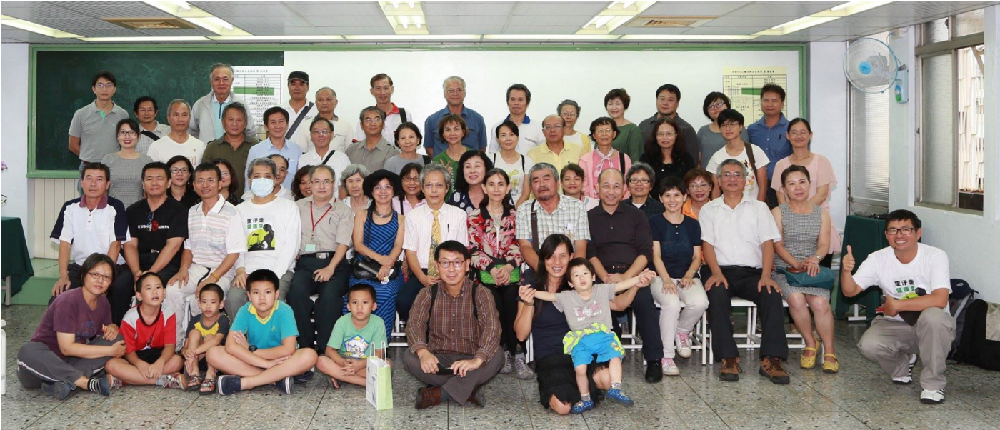
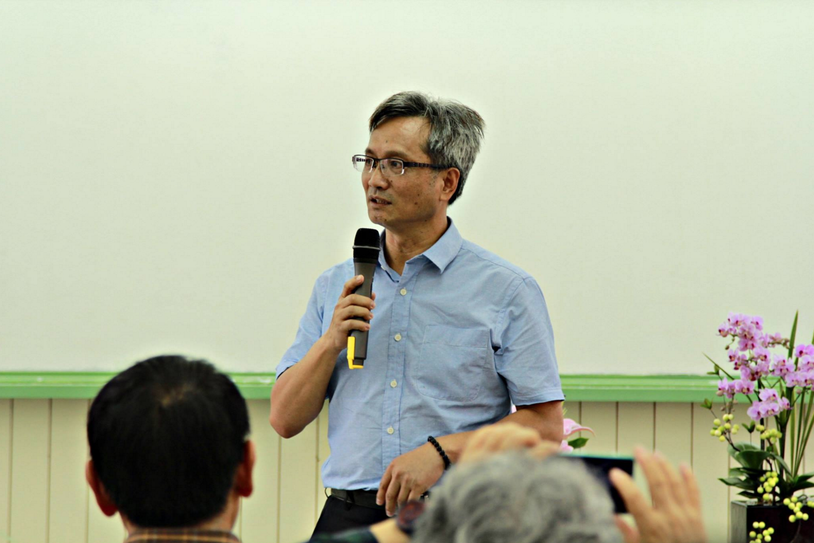

中部聯合NGO辦公室成立大會
護樹協會 Auguest 21, 2015
有一天，這張照片會成為台灣歷史中值得記載的一張照片。
今天是陳玉峰老師辛苦籌備的中台灣NGO聯合辦公室的成立日子，陳月霞老師談到早年沒有錢，為了省錢環保運動者得要寄人籬下看人臉色的日子，不由得心酸。
陳老師說台灣有7萬多個NGO團體，剛好跟台灣的警察的數量差不多，表示台灣是個很有愛心也很願意為社會付出的地方，捐款也是每次都不落人後，但是環境保護團體卻是資源最少的。
說真的，像檢舉食安和各種環境污染等等都是得要冒著生命危險，如果不是有一種固執認為不應該這樣對待環境，這種事情真的沒有人要做。
承蒙陳老師抬愛請我去參加成立活動以及致詞，我今天想要傳達的訊息主要有幾個，一個是懷著感恩的心感謝前輩用他們的人格典範走在前面給我看，他們在前面做的時候也許遭遇很多讓人覺得失望痛苦的地方，但是我要給一個溫暖的擁抱，感謝前輩們的付出，我非常肯定且堅信保護環境是人類理所當然的義務，我們該脫離野蠻式的假文明邁向真正的文明。
彰化環盟理事長蔡佳陽的發言讓我很有感觸，他提到說他上大學的時候本來是去學環境工程，沒有想到教授竟然教他們『只要把煙囪蓋高一點讓空氣污染飛到別的地方去就會散掉』，讓他很傻眼，後來去選修了陳玉峰老師的課程發現陳老師談保護生態，他覺得這才是他想要學的東西。
楊國禎教授談榕樹的觀察，其實是在講我們很多人對環境的觀察和理解都是很不科學的。葉光芃醫師一貫如常的像個傳道人一樣的談空氣污染，我其實有想要像他一樣一直都戴著口罩才出門，因為之前閱讀了一篇文章談到中國進口的燃煤很多是有輻射污染，而輻射污染是甲狀腺腫瘤的元凶，台灣的甲狀腺癌症已經進入前十大三年的時間了，這個問題一直都被忽略。
林世賢議員讓我體會到一個有心的議員其實可以做很多事情，在他的推動之下，彰化縣政府對於護樹和環境保護的議題真的比過去容易多了，他提到中國北京的學者說中國本身的經濟會被他們的空氣污染給打敗，我也如此相信著。他不斷的鼓勵大家要去從政。得了肺腺癌的他還是沒有養成戴口罩的習慣，我在想說是不是要發明一款口罩，戴上去讓人看不出來，這樣對政治人物會比較方便一點。
後來陳文彬導演講到說如果他當選立委是要『少做無謂的開發』比方說什麼招潮蟹的棲地旁邊要蓋什麼活動中心之類的，他說等到這些東西蓋好了，招潮蟹也被害死光光了，不過他說這樣講很多人票會投不下去。
他講這個話的時候自己都在笑，我心裡面想在彰化地區還有媽媽因為贈送牙膏就加入國民黨，送幾塊肥皂就會因為『還人情』而投票給特定人，真的要靠談政治理念去當選真的有點替他捏把冷汗。
場地的贊助人蘇董是個感情非常豐富的人，幾番致詞都哽咽了，大家拼命給他鼓掌，我知道的，真的知道他的眼淚的，他說他創業的期間沒有機會玩，對台灣的瞭解非常少，有一天開始跟陳老師去看台灣的森林河流海洋之後，他才知道原來要好好的寶貝台灣。

我想到自己以前很傻的哩，我說以前自己也不懂這些，覺得中央山脈很不方便，如果把山挖掉不是多很多平地可以蓋房子嗎？蛇和昆蟲還有一些長得醜醜的動物都很討厭，幹嘛有他們存在？從前看農地想的是這邊如果重劃可以一坪3萬變10萬多好，去清境農場想的是在這邊蓋民宿會不會賺錢？而我也曾經被洗腦洗的相信政府的傳媒所說的那些似是而非的鬼話，什麼中國比較大台灣比較小，中國比較強台灣比較弱，所以台灣不能獨立之類的.....
我以我自己過去的白癡想法做見證，我笑說：『現在那些政治人物和開發派的人腦袋瓜裝的東西就是過去我的腦袋瓜裝的。』
我的例子證實人是可以因為得到正確的知識而改變，也期許自己對人多有一些愛心和包容心，那些現在講一些屁話的人不是壞人，只是沒有得到正確資訊的人。
最後我還是提到自己目前的狀況，我是疲倦的飛雁，這時候需要的是夥伴幫忙飛在前面罩我一下，等我修養好生息我會再飛到前面去的，我不能再過太緊張和高度壓力的生活，不然會很快去見上帝的。
不過今天看到彰化這麼多人來參與這個活動，我還是有一點小小的感嘆得要說，台中市自從林佳龍當選之後，原本監督胡志強的人有不少變成了『龍屁團』成員，台中的環境保護運動也比以前困難很多，昔日的夥伴今日變成了林佳龍的打手，真的叫人情何以堪？
不過我很樂觀地認為即使沒有我的存在，未來台中人還是會有很多人跳出來保護環境的。
我從未如此的樂觀～